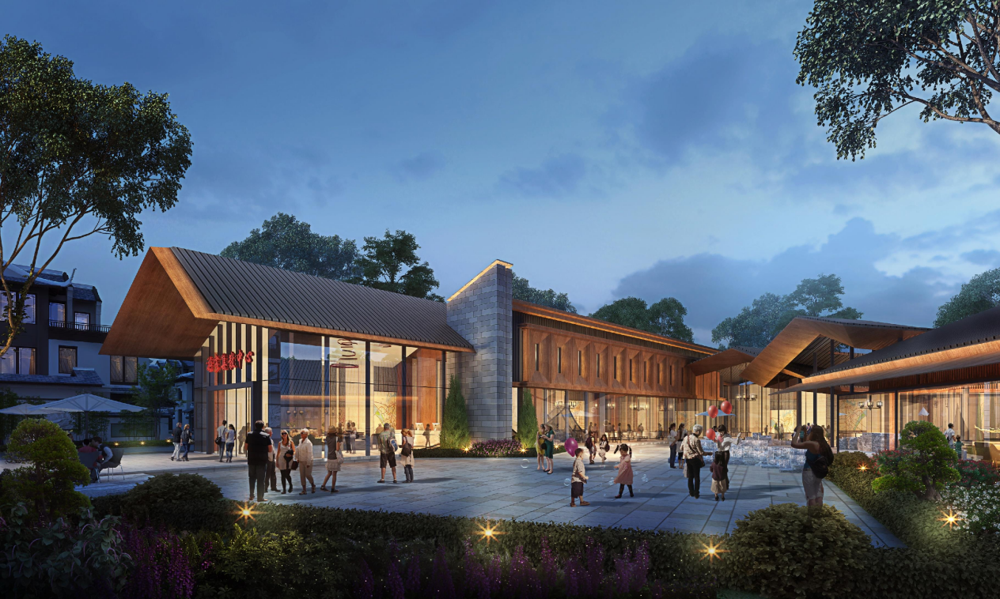

Architectural Projects
建筑项目
In today's complex and ever-changing architectural industry, the role of an architect is not just limited to design and construction but also includes planning and coordination of projects. As an architect, I have undertaken critical tasks in multiple projects, which not only demonstrate my professional capabilities but also highlight my sense of responsibility and passion for my work.
在当今复杂且多变的建筑行业中，建筑师的角色不仅仅是设计和施工，更是项目的策划者和协调者。作为一名建筑师，我在多个项目中承担了关键任务，这不仅体现了我的专业能力，也展示了我的责任感和对工作的热爱。
Tongzheng Avenue Villa
扶绥同正大道别墅
In the villa design project on Tongzheng Avenue in Fusui, I took on tasks including the SU model creation for the tourist center, preliminary analysis for the text PPT, and design concept development. The tourist center, as a vital supporting facility for the villa area, directly influences the overall quality and user experience of the project. In the process of creating the SU model, I had to consider not only the appearance and structure of the building but also simulate the flow and user experience of the tourists, ensuring that every detail of the design meets actual needs. The preliminary analysis for the text PPT required me to conduct in-depth research on the project's background, market demands, and design trends, and to translate this information into clear and understandable graphic materials for the project team. The design concept development is the soul of the entire project. I proposed innovative design concepts based on the characteristics of the project and the client's requirements, ensuring that the project is unique while also being practical and feasible.
在扶绥同正大道别墅设计项目中，我承担了游客中心SU模型制作、文本PPT前期分析和设计理念构思等任务。游客中心作为别墅区的重要配套设施，其设计直接影响到整个项目的品质和用户体验。在SU模型制作过程中，我不仅要考虑建筑的外观和结构，还要模拟游客的动线和使用体验，确保设计的每一个细节都符合实际需求。文本PPT前期分析则要求我对项目的背景、市场需求和设计趋势进行深入研究，并将这些信息转化为清晰、易懂的图文资料，供项目团队参考。设计理念的构思更是整个项目的灵魂所在，我结合项目的特点和客户的需求，提出了创新的设计理念，既保证了项目的独特性，又符合实际可行性。

Xincheng County Affordable Housing
忻城县保障住房
In the affordable housing project in Xincheng County, I was responsible for determining the housing layout, site modeling for Hongdu District, and creating the SU model for the Hongdu District site. Affordable housing projects, as a public welfare project, need to balance practicality, economy, and aesthetics. During the process of determining the housing layout, I fully considered the actual needs of the residents, planning each space rationally to ensure that it is both comfortable and practical. The site modeling for Hongdu District involved the design of the drainage system for the site, a highly technical task requiring a thorough understanding of terrain, climate, and drainage technology to ensure that the designed drainage system is efficient and reliable. Creating the SU model for the site was a three-dimensional simulation of the entire site, helping the design team gain a comprehensive understanding of the project and facilitating communication and presentation with clients and other stakeholders.
在忻城县保障住房项目中，我负责了户型图确定、红渡区地块强排和红渡区地块SU模型等任务。保障住房项目作为一项民生工程，其设计需要兼顾实用性、经济性和美观性。在户型图确定过程中，我充分考虑到住户的实际需求，合理规划每一个空间，使其既舒适又实用。红渡区地块强排则涉及到地块的排水系统设计，这是一项技术性很强的工作，要求我对地形、气候和排水技术有深入了解，确保设计的排水系统既高效又可靠。地块SU模型的制作则是对整个地块的三维模拟，这不仅有助于设计团队对项目的全面了解，也便于与客户和其他相关方进行沟通和展示。
Qixing Road Residential Building
七星路民宅
In the project of the 3-story residential building on Qixing Road, I was primarily responsible for the facade drawing. The facade drawing, as an essential part of architectural design, not only directly affects the appearance of the building but also relates to the structural safety and functionality. During the drawing process, I strictly adhered to building codes, accurately calculating every dimension to ensure that the facade design is both aesthetically pleasing and structurally sound. Additionally, I considered the environmental characteristics of the project location, making rational choices in building materials and color schemes, ensuring that the building not only integrates into the surrounding environment but also possesses unique visual appeal.
在七星路民宅3层报建版的项目中，我主要负责立面图绘制。立面图作为建筑设计的重要组成部分，不仅直接影响建筑的外观效果，更关系到建筑的结构安全和功能实现。在绘制过程中，我严格按照建筑规范，精确计算每一个尺寸，确保立面设计既美观大方，又符合结构力学的要求。同时，我还结合项目所在地的环境特点，合理选择建筑材料和色彩搭配，使建筑不仅融入周边环境，还具备独特的视觉吸引力。
Lingnan Garden
岭南园
In the project of the Lingnan Garden's overall flat fill and color management, I was responsible for the entire coloring work. The task of overall flat fill and color management is not merely about applying color; it involves a comprehensive consideration of the visual effects, spatial perception, and pedestrian flow of the entire garden. Lingnan Garden, being a garden with regional characteristics, requires the design to fully embody the essence of Lingnan culture while also adhering to modern garden design aesthetics. My coloring work required meticulous attention to detail, from the overall layout to the intricate aspects, considering every step carefully. Through my efforts, the final presentation was a master plan that is rich in regional characteristics and exudes modern aesthetic appeal, significantly enhancing the design of Lingnan Garden.
在岭南园部分的总平填彩项目中，我负责了整体的填彩工作。总平填彩不仅仅是简单的上色，更是对整个园区的视觉效果、空间感受和人流动线的综合考量。岭南园作为一座具有地域特色的园林，其设计需要充分体现岭南文化的精髓，同时兼顾现代园林设计的美学原则。我的填彩工作需要细致入微，从整体布局到细节处理，每一步都要精心考虑。通过我的努力，最终呈现出了一幅既富有地域特色，又充满现代美感的总平面图，为岭南园的设计增色不少。
Conclusion
结论
Through my work on these projects, I have demonstrated not only my professional skills and creative thinking as an architect but also my sense of responsibility and team spirit. In each task, I strive for perfection, paying attention to every detail not just to complete the task but to pursue architectural artistry and fulfill commitments to clients. I understand deeply that architectural design is not only a technical job but also an art. Only through continuous learning and practice can one continually improve their professional level and create more outstanding architectural works. In future work, I will continue to maintain my love and dedication to architecture, constantly challenging myself and contributing my strengths to more projects.
通过在这些项目中的工作，我不仅展示了作为建筑师的专业技能和创意思维，也体现了我的责任感和团队合作精神。在每一个任务中，我都力求精益求精，注重每一个细节，不仅为了完成任务，更是为了实现对建筑艺术的追求和对客户的承诺。我深知，建筑设计不仅是一项技术工作，更是一门艺术，只有通过不断的学习和实践，才能不断提升自己的专业水平，创造出更多优秀的建筑作品。在未来的工作中，我将继续保持对建筑的热爱和执着，不断挑战自我，为更多的项目贡献自己的力量。